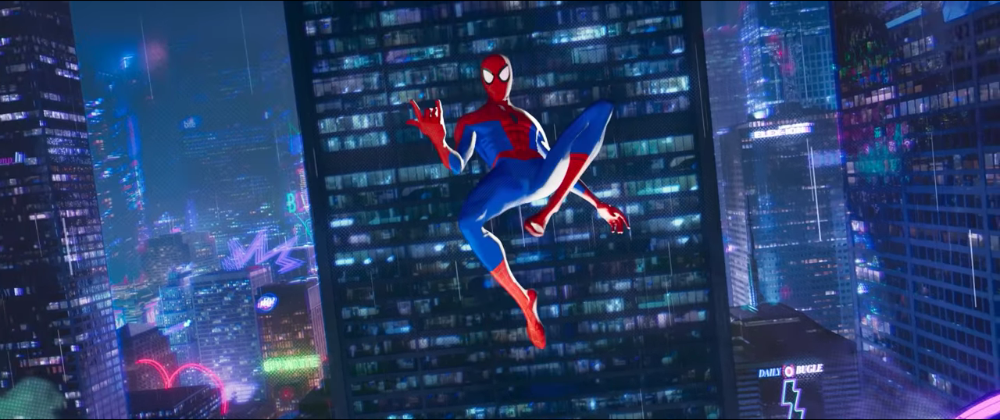
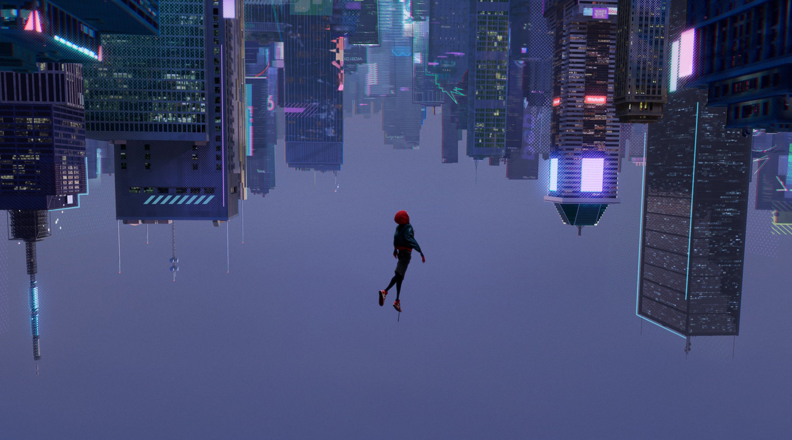

Spider Man Un Nuevo Universo


Miles Morales, a raíz de la muerte de Peter Parker, asume la identidad de el hombre araña, y se encontrara con personas con poderes similares al suyo, al rededor de todo el multiverso.